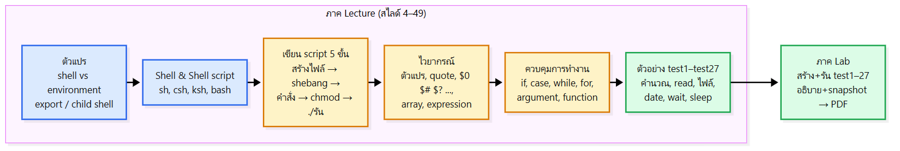
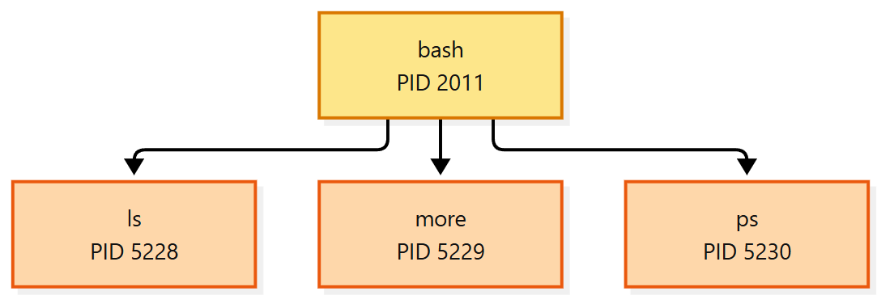
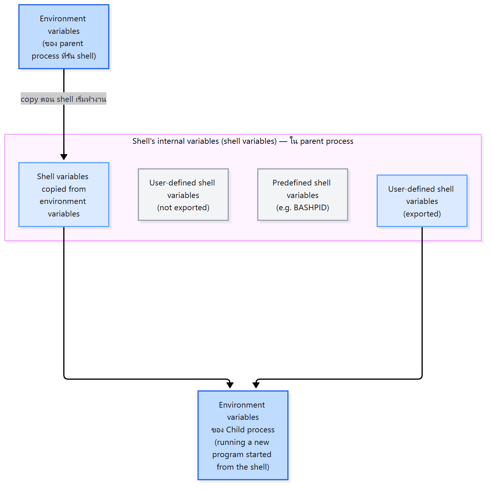
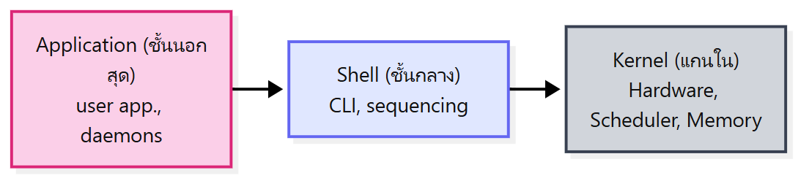
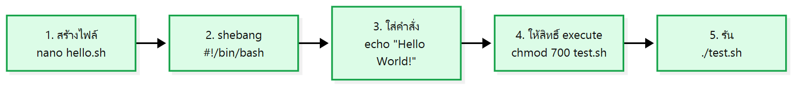

หมายเหตุไฟล์ต้นทาง:
Lecture 10 Shell script.pdf(49 หน้า) เป็นสไลด์ของ ITDS212 Computer System Lab #10 Shell Scripts (15 ต.ค. 2026) ส่วนLab 10 Shell scripts.pdf(4 หน้า) เป็นใบงาน Lab #10เลขสไลด์ในสรุปนี้ = เลขหน้า PDF (ตรงกับเลขที่พิมพ์มุมขวาล่างของสไลด์) อ้างเป็น (Lecture สไลด์ N) และ (Lab หน้า N)
ทุกสคริปต์ในสรุปนี้ รันจริงด้วย GNU bash 5.3 (Git Bash บน Windows) แล้ว ผลที่ต่างจากสไลด์มี
> ⚠️กำกับ
ภาพรวมบทนี้: บทนี้สอนใช้ shell เป็นภาษาโปรแกรม เริ่มจากความต่างของ shell variable กับ environment variable (ตัวไหนส่งต่อให้ child process ได้ และทำไมต้อง
export) แล้วรู้จัก shell แต่ละแบบ (sh, csh, ksh, bash) จากนั้นไล่ 17 ขั้นของการเขียน shell script ตั้งแต่สร้างไฟล์, shebang,chmod, ตัวแปร, quote, ตัวแปรพิเศษ ($0 $# $? $!...), array, expression ไปจนถึงif/case/while/forและการรับ argument ปิดด้วย ตัวอย่าง test1–test27 (คำนวณ,read, function, จัดการไฟล์/โฟลเดอร์, date,wait,sleep) ซึ่ง Lab 10 ให้สร้าง รัน และอธิบายครบทุกตัวบทนี้ มีโค้ด bash ทุกตัวอย่างมีเฉลย output ทีละขั้น

สารบัญ
ภาค Lecture 0. วิชานี้เรียนอะไรตามตาราง และวัดผลยังไง?
- Environment variable คืออะไร มีตัวไหนบ้าง?
- Shell variable ต่างจาก Environment variable ยังไง?
- Shell กับ Shell script คืออะไร และ shell มีกี่แบบ?
- การเขียน shell script มีกี่ขั้น?
- สร้างไฟล์ → shebang → ใส่คำสั่ง → chmod → รัน ทำยังไง?
- สร้างและเรียกใช้ตัวแปรยังไง และ single quote ต่างจาก double quote ยังไง?
- ตัวแปรพิเศษ
$0 $# $* $@ $? $!คืออะไร? - ใช้ environment variable ใน script ยังไง?
- เขียน comment ยังไง?
- ใช้ array ยังไง ทำไมต้องมี
{ }? - เขียนเงื่อนไข (expression) ยังไง?
ifเขียนยังไง?caseเขียนยังไง?whileloop เขียนยังไง?forloop เขียนยังไง?- รับ input argument ยังไง?
- ตัวอย่าง test1–test18 (echo, คำนวณ, loop, read, if/case, argument, string, function)
- ตัวอย่าง test19–test27 (โฟลเดอร์, ไฟล์, date, wait, sleep)
ภาค Lab 19. Lab 10 ต้องทำอะไร ส่งอะไร? 20. แนวคำตอบ Lab: test1–test27 แต่ละตัวทำอะไร ได้ output อะไร
ภาค Lecture
0. วิชานี้เรียนอะไรตามตาราง และวัดผลยังไง? (Lecture สไลด์ 1–3)
แก่นLab #10 คือ "การฝึกเขียน shell script" ต่อจากสัปดาห์ 9 (การจัดการสภาพแวดล้อม) คะแนนแบ่ง lab report / quiz / midterm / final อย่างละ 25% และต้องเข้าเรียน 80%
Tentative Schedule (สไลด์ 2)
| สัปดาห์ | หัวข้อ | สัปดาห์ | หัวข้อ |
|---|---|---|---|
| 1 | ติดตั้ง virtual machine และ Ubuntu OS, login ด้วย username/password | 9 | การฝึกใช้คำสั่งเกี่ยวกับการจัดการสภาพแวดล้อม |
| 2 | แนะนำโครงสร้างระบบปฏิบัติการลีนุกซ์ และคำสั่ง Linux เบื้องต้น | 10 | การฝึกเขียน shell script |
| 3 | การจัดการแฟ้มข้อมูล | 11 | การเขียนโปรแกรมจัดการ process และ thread |
| 4 | การจัดการผู้ใช้และกลุ่มผู้ใช้ของระบบ | 12 | การติดตั้ง Apache server, MySQL, PHP |
| 5 | สิทธิ์ของผู้ใช้ | 13 | การตรวจสอบระบบ (System monitoring) |
| 6 | ใช้ nano และ vim editor | 14 | การบริหารจัดการระบบปฏิบัติการลีนุกซ์ |
| 7 | คำสั่งจัดการ storage | 15 | โครงสร้างและการบริหารจัดการระบบปฏิบัติการวินโดว์ |
| 8 | คำสั่งเกี่ยวกับ process และ memory |
Evaluation and Grading Criteria (สไลด์ 3)
| วิธีการวัดผล | น้ำหนัก (%) | สัปดาห์ที่ประเมิน |
|---|---|---|
| การเข้าเรียน | ต้อง 80% attendance | 1–15 |
| รายงานผลแลป | 25 | 1–15 |
| การทดสอบย่อย | 25 | 1–15 |
| การสอบกลางภาค | 25 | 9 |
| การสอบปลายภาค | 25 | 17 |
- ส่งรายงานแลปภายใน 23.59 น. ของวันอังคาร หรือวันที่มีการเรียน
- มี ทดสอบย่อยทุกอาทิตย์ ก่อนจบคาบ
1. Environment variable คืออะไร มีตัวไหนบ้าง? (Lecture สไลด์ 4)
แก่นenvironment variable คือตัวแปรที่บอก "สภาพแวดล้อม" ของผู้ใช้ปัจจุบัน เช่น ใครล็อกอิน (USER, LOGNAME), home อยู่ไหน (HOME), ใช้ shell อะไร (SHELL), หาโปรแกรมจากโฟลเดอร์ไหน (PATH)
| ตัวแปร | ความหมาย |
|---|---|
| USER | ผู้ใช้ที่ล็อกอินอยู่ตอนนี้ |
| HOME | home directory ของผู้ใช้ปัจจุบัน |
| SHELL | path ของ shell ที่ผู้ใช้ใช้ เช่น bash หรือ zsh |
| LOGNAME | ชื่อของผู้ใช้ปัจจุบัน |
| PATH | รายการ directory ที่ระบบจะค้นเมื่อสั่งรันคำสั่ง — ค้น ตามลำดับ และใช้ ไฟล์ executable ตัวแรกที่เจอ |
| LANG | ภาษาที่ใช้อยู่ |
| TERM | terminal emulation ที่ใช้อยู่ |
💡 PATH เปรียบเหมือนรายชื่อชั้นวางของที่ไล่หาทีละชั้น เจอของชิ้นแรกที่ชื่อตรงก็หยิบเลย ไม่หาต่อ
2. Shell variable ต่างจาก Environment variable ยังไง? (Lecture สไลด์ 5–10)
แก่นshell variable อยู่แค่ใน shell ที่สร้างมัน ส่วน environment variable ถูกส่งต่อ (inherit) ให้ child shell/โปรแกรมลูก ทำ shell variable ให้เป็น environment variable ได้ด้วย export
2.1 echo LOGNAME กับ echo $LOGNAME ต่างกันยังไง? (Lecture สไลด์ 5)
แก่นต้องมี $ นำหน้าถึงจะได้ "ค่า" ของตัวแปร ถ้าไม่มี $ echo จะพิมพ์ชื่อออกมาตรง ๆ
ผลลัพธ์ในสไลด์ (เครื่อง sudsanguan@muict):
| คำสั่ง | output |
|---|---|
echo LOGNAME |
LOGNAME |
echo $LOGNAME |
sudsanguan |
echo SHELL |
SHELL |
echo $SHELL |
/bin/bash |
echo PATH |
PATH |
echo $PATH |
/usr/local/sbin:/usr/local/bin:/usr/sbin:/usr/bin:/sbin:/bin:/usr/games:/usr/local/games:/snap/bin |
- กล่องในสไลด์เขียนว่า "LOGNAME – Shell Variables" และ "$LOGNAME – Environment Variables"
- สังเกต PATH: เป็นรายการ directory คั่นด้วย
:(ตามความหมายในสไลด์ 4)
⚠️ ตามผลรันในสไลด์ (และที่รันเอง)
echo LOGNAMEแค่พิมพ์ ข้อความ "LOGNAME" ไม่ได้ดึงค่าตัวแปรใด ๆ ออกมา ประเด็นที่ควรจำจากหน้านี้คือ ไม่มี$= ได้ตัวหนังสือ, มี$= ได้ค่า ส่วนป้าย "Shell Variables / Environment Variables" ถ้าออกสอบให้ตอบตามสไลด์
2.2 คุณสมบัติของทั้งสองแบบ (Lecture สไลด์ 6)
- Shell variables มีอยู่ เฉพาะใน shell ที่สร้างมัน
- Environment variables ถูก inherit ไปยัง child shell แต่ shell variable ไม่ถูก inherit
- เปลี่ยน shell variable เป็น environment variable ได้ด้วยคำสั่ง
export - คนทั่วไปมักเข้าใจว่า shell variable กับ environment variable เป็นตัวเดียวกัน (ซึ่งไม่ใช่)
- shell variable คือ ตัวแปรภายใน ที่ใช้ขณะรันโปรแกรม shell
- shell มี คำสั่ง built-in สำหรับ create, assign, delete shell variable
2.3 Shell เริ่มทำงานแล้วเกิดอะไรกับตัวแปร? (Lecture สไลด์ 7–8)
แก่นตอน shell เริ่ม ค่า environment variable ทั้งหมดถูก copy มาเป็น shell variable ชื่อเดียวกัน แต่การแก้/ลบ shell variable ไม่กระทบ environment variable ตัวจริง
ตัวอย่างสไลด์ 7 — สร้างและลบ shell variable
$ foo=bar # สร้าง shell variable ชื่อ foo
$ echo $foo
bar
$ unset foo # ลบตัวแปร
$ echo $foo
# ← ได้บรรทัดว่าง เพราะ foo ไม่มีแล้ว
รันจริงได้ผลตรงกับสไลด์: bar แล้วตามด้วยบรรทัดว่าง
ตัวอย่างสไลด์ 8 — ดูทั้งสองฝั่งพร้อมกัน (strings /proc/$$/environ | grep LOGNAME = ดู environment variable ของ shell ปัจจุบัน, echo $LOGNAME = ดู shell variable)
| ลำดับ | คำสั่ง | output | ป้ายในสไลด์ |
|---|---|---|---|
| 1 | strings /proc/$$/environ | grep LOGNAME |
LOGNAME=seed |
Environment variable |
| 2 | echo $LOGNAME |
seed |
Shell variable |
| 3 | LOGNAME=bob แล้ว echo $LOGNAME |
bob |
Shell variable เปลี่ยนค่า |
| 4 | strings /proc/$$/environ | grep LOGNAME |
LOGNAME=seed |
Environment variable คงเดิม |
| 5 | unset LOGNAME แล้ว echo $LOGNAME |
(ว่าง) | Shell variable หายไป |
| 6 | strings /proc/$$/environ | grep LOGNAME |
LOGNAME=seed |
Environment variable ยังคงอยู่ |
$$= PID ของ shell ปัจจุบัน →/proc/$$/environคือไฟล์ environment ของ process นั้น
⚠️ รันซ้ำใน Git Bash บน Windows: ขั้น 4 ได้
LOGNAME=bobและขั้น 6 ไม่เจอ LOGNAME เลย ต่างจากสไลด์ เพราะ/procบน Windows (Cygwin) ทำงานไม่เหมือน Ubuntu ที่ใช้ในสไลด์ — ตอบข้อสอบให้ยึดผลตามสไลด์ (env คงเดิมเสมอ)
2.4 Child shell ได้ตัวแปรอะไรบ้าง? (Lecture สไลด์ 9–10)
แก่นทุกคำสั่งที่รันจาก bash จะเป็น child process ของ bash และได้รับเฉพาะ environment variable (ที่ copy มา + ที่ export แล้ว) ไม่ได้ shell variable ที่ไม่ได้ export
สไลด์ 9 — ดู parent/child ด้วย ps
$ cd /
$ ps
PID TTY TIME CMD
2011 pts/0 00:00:00 bash
5227 pts/0 00:00:00 ps
$ ls -al |more &
[1] 5229
$ ps -f
UID PID PPID C STIME TTY TIME CMD
sudsang+ 2011 1985 0 15:15 pts/0 00:00:00 bash
sudsang+ 5228 2011 0 19:03 pts/0 00:00:00 ls --color=auto -al
sudsang+ 5229 2011 0 19:03 pts/0 00:00:00 more
sudsang+ 5230 2011 0 19:03 pts/0 00:00:00 ps -f
[1]+ Stopped ls --color=auto -al | more
ls,more,ps -fมี PPID = 2011 = PID ของ bash → ทั้งสามเป็น child ของ bash

สไลด์ 10 — ตัวแปรตัวไหนไปถึง child process

- ใน parent process (ที่รัน shell) มี Environment variables และ shell's internal variables (shell variables) 4 กลุ่ม:
- Shell variables copied from environment variables — ได้มาตอน shell เริ่ม
- User-defined shell variables (exported) — ตัวแปรที่เราสร้างและ export แล้ว
- User-defined shell variables (not exported) — ตัวแปรที่เราสร้างแต่ไม่ export
- Predefined shell variables (เช่น
BASHPID)
- เมื่อ shell รันโปรแกรมใหม่ (child process) จะมีแค่ กลุ่ม 1 และ 2 ที่กลายเป็น environment variables ของ child
รันพิสูจน์เอง (ไม่มีในสไลด์ ใช้ยืนยันกฎในสไลด์ 6/10):
myshell=local # shell variable (not exported)
export myenv=exported # export แล้ว
bash -c 'echo "child sees myshell=[$myshell] myenv=[$myenv]"'
output: child sees myshell=[] myenv=[exported] → child เห็นแค่ตัวที่ export
💡 เปรียบเหมือนสมุดโน้ตส่วนตัว (shell variable) กับใบแจ้งที่ถ่ายเอกสารแจกลูก ๆ ทุกคน (environment variable) —
exportคือการเอาโน้ตไปถ่ายเอกสารแจก
3. Shell กับ Shell script คืออะไร และ shell มีกี่แบบ? (Lecture สไลด์ 11–12)
แก่นKernel คุมฮาร์ดแวร์/ทรัพยากร ผู้ใช้สั่งงานผ่าน Shell (CLI) และเอาคำสั่ง shell มาเรียงเป็นไฟล์ = Shell Script เพื่อให้ทำงานสะดวกขึ้น — bash คือ default shell ของ Linux ปัจจุบัน
3.1 Shell อยู่ตรงไหนในระบบ? (Lecture สไลด์ 11)
- Linux มี Kernel เชื่อมต่อกับ Hardware เพื่อบริหารจัดการทรัพยากร
- ผู้ใช้สั่งการผ่าน Shell และนำคำสั่งใน shell มาสร้างเป็นชุดคำสั่ง = Shell Script
- CLI = Command Line Interface

- รูปในสไลด์เป็นวงซ้อนกัน: Kernel อยู่แกนใน (Hardware, Scheduler, Memory), Shell ห่อรอบ (CLI, sequencing), Application อยู่วงนอกสุด (user app., daemons)
3.2 Shell แต่ละแบบต่างกันยังไง? (Lecture สไลด์ 12)
| Shell | path | จุดเด่นตามสไลด์ | default prompt |
|---|---|---|---|
| Bourne shell | /bin/sh |
shell ยุคแรก ใช้แพร่หลาย โครงสร้างภาษาคล้าย ภาษาอัลกอ (ALGO) เขียน script ได้ เป็น standard shell ที่มีใน UNIX ทุกตัว ย้าย script ไป UNIX อื่นได้โดยไม่ต้องแก้ | $ |
| C shell | /bin/csh |
พัฒนาหลัง Bourne shell ไวยากรณ์ เหมือนภาษา C มีฟังก์ชันสะดวก ควบคุมการไหลของข้อมูลดีกว่า Bourne และ เรียกคำสั่งที่ใช้ไปแล้วซ้ำได้ | % |
| Korn shell | /bin/ksh |
พัฒนาจาก Bourne + C shell ทำได้ทุกอย่างที่ Bourne ทำ เขียน script ง่ายและรัดกุมขึ้น เรียกคำสั่งเก่ามา execute ได้ = รวมข้อดีของ Bourne และ C shell แต่ ไม่ได้มีใน UNIX ทุกตัว | $ |
| Bourne Again shell (bash) | /bin/bash |
นำ Bourne shell มาพัฒนาใหม่ ทำ line editing ได้ เพิ่มประสิทธิภาพหลายอย่าง ไม่ใช่ standard UNIX shell แต่เป็น default shell ของ Linux ปัจจุบัน | $ |
💡 จำ prompt: มีแค่ C shell ที่เป็น
%ที่เหลือเป็น$หมด⚠️ อย่าสับสน: standard UNIX shell = Bourne (sh) ส่วน default ของ Linux = bash
4. การเขียน shell script มีกี่ขั้น? (Lecture สไลด์ 13)
แก่นสไลด์แบ่งเป็น 17 หัวข้อ — 5 ขั้นแรกคือวิธีทำให้ script รันได้ ที่เหลือคือไวยากรณ์ของภาษา (ตัวแปร, เงื่อนไข, loop, argument)
- สร้าง file shell script
- กำหนด interpreter หรือ shebang
- ใส่ชุดคำสั่ง command line
- กำหนดสิทธิ์ execute ให้ shell script
- เรียกใช้งาน shell script (execute)
- สร้างตัวแปรใน shell script
- เรียกใช้งานตัวแปรใน shell script
- ใช้ตัวแปร environment
- ตัวแปรแบบพิเศษ
- การ Comment
- ตัวแปรแถวลำดับ (array)
- รูปแบบเงื่อนไข (expression)
- เงื่อนไข if
- เงื่อนไข case switch
- loop while
- loop for
- การส่งค่า input argument
⚠️ ในสไลด์จริง หัวข้อ 9 (ตัวแปรพิเศษ) อยู่สไลด์ 21 ก่อนหัวข้อ 8 (environment) ที่สไลด์ 22 สรุปนี้เรียงตามเลขหัวข้อ 1–17 แต่บอกเลขสไลด์กำกับทุกหัวข้อ
5. สร้างไฟล์ → shebang → ใส่คำสั่ง → chmod → รัน ทำยังไง? (Lecture สไลด์ 14–17)
แก่นscript คือไฟล์ text ธรรมดา บรรทัดแรกต้องเป็น shebang #!/bin/bash บอกว่าใช้ interpreter ตัวไหน แล้วต้อง chmod ให้มีสิทธิ์ x ก่อนจึงรันด้วย ./ชื่อไฟล์ ได้

ขั้น 1 สร้างไฟล์ (สไลด์ 14) — เป็น file text ธรรมดา สร้างด้วย editor อะไรก็ได้ เช่น vim, nano: $ nano hello.sh
ขั้น 2 shebang (สไลด์ 14) — บรรทัดแรกต้องกำหนด shebang เพื่อให้โปรแกรมรู้ว่าจะใช้ interpreter ตัวไหน load ไฟล์ รูปแบบ #!<shell program>:
#!/bin/sh·#!/bin/csh·#!/bin/bash·#!/bin/ksh
ขั้น 3 ใส่คำสั่ง (สไลด์ 15) — เขียน code ที่ต้องการให้ script ทำ เช่นแสดง "Hello World" ด้วย echo แล้ว save:
#!/bin/bash
echo "Hello World!"
ขั้น 4 กำหนดสิทธิ์ execute (สไลด์ 16)
- ไฟล์ที่เพิ่งสร้างมีสิทธิ์ owner แค่ read + write (
-rw-rw-r--) ยัง execute ไม่ได้
$ ls -l test.sh
-rw-rw-r-- 1 staff staff 32 May 13 15:28 test.sh
$ sudo chmod 700 test.sh
$ ls -l test.sh
-rwx------ 1 staff staff 32 May 13 15:28 test.sh
- อ่าน
700: owner = 7 = rwx, group = 0, others = 0 →-rwx------ - มี
xแล้ว = ไฟล์ execute ได้ - ขนาด 32 bytes ตรงกับไฟล์ Hello World ข้างบน (รันเองได้ 32 bytes เท่ากัน)
⚠️ บน Windows (Git Bash)
chmodไม่เปลี่ยนสิทธิ์จริงls -lขึ้น-rwxr-xr-xตลอด — ต้องลองบน Ubuntu VM ถึงจะเห็นผลตามสไลด์
ขั้น 5 รัน (สไลด์ 17)
- พิมพ์ full path ของ script หรือถ้าอยู่ใน directory เดียวกันใช้
./<shell script>แล้ว Enter - shell จะรันตั้งแต่ บรรทัดแรกถึงบรรทัดสุดท้าย แสดงผลบนจอ แล้ว ออกจากโปรแกรมเอง
~/shell$ nano test.sh
~/shell$ ./test.sh
Hello World!
รันจริง: Hello World! ✔
6. สร้างและเรียกใช้ตัวแปรยังไง และ single quote ต่างจาก double quote ยังไง? (Lecture สไลด์ 18–20)
แก่นตั้งตัวแปรด้วย variable=value ห้ามมี space รอบ = อ่านค่าด้วย $ชื่อ — ใน '...' ได้ตัวหนังสือตามที่พิมพ์ ส่วนใน "..." จะแทนค่าตัวแปรให้
6.1 สร้างตัวแปร (Lecture สไลด์ 18)
- ไม่ต้องประกาศชนิดตัวแปรเหมือนภาษา C กำหนดค่าแล้วใช้ได้ทันที:
variable=value - ⚠️ ระวัง space: ใน shell script space คือตัวแบ่ง argument จึง ห้ามมี space หน้าและหลัง
= - ถ้าค่ามี space ให้ครอบด้วย single quote
'หรือ double quote"
#!/bin/bash
var1=shell
var3='shell script'
var4="shell script'
⚠️ สไลด์ 18 บรรทัด
var4="shell script'เปิดด้วย"แต่ปิดด้วย'ซึ่งผิด (quote ต้องเป็นคู่ชนิดเดียวกัน) — ที่ถูกคือvar4="shell script"เหมือนในสไลด์ 20
ทดลองรันกรณีมี space (ไม่มีในสไลด์ ใช้ยืนยันข้อเตือน):
| เขียน | ผลรัน | เพราะ |
|---|---|---|
x = 5 |
x: command not found |
shell มองว่า x คือคำสั่ง มี argument = กับ 5 |
x= 5 |
5: command not found |
กลายเป็นตั้ง x เป็นค่าว่าง แล้วรันคำสั่งชื่อ 5 |
v=a b |
b: command not found |
space ตัดค่า → รันคำสั่ง b |
6.2 เรียกใช้ตัวแปร (Lecture สไลด์ 19–20)
- แสดงค่าโดยใช้
$นำหน้าตัวแปร - single quote
'...'→ ได้ค่า ตามสิ่งที่พิมพ์ ทุกตัวอักษร - double quote
"..."→ นำค่าของตัวแปรที่เก็บไว้มาแสดง
ตัวอย่างสไลด์ 20 (เขียนแบบ quote ตรงที่ถูกต้อง):
#!/bin/bash
var1=shell
var2=script
var3='shell script'
var4="shell script"
var5='$var1 $var2'
var6="$var1 $var2"
echo $var1
echo $var2
echo $var3
echo $var4
echo $var5
echo $var6
เฉลย output ทีละบรรทัด:
| คำสั่ง | output | เหตุผล |
|---|---|---|
echo $var1 |
shell |
ค่าธรรมดา |
echo $var2 |
script |
ค่าธรรมดา |
echo $var3 |
shell script |
quote เดี่ยวทำให้เก็บ space ได้ |
echo $var4 |
shell script |
quote คู่ก็เก็บ space ได้ |
echo $var5 |
$var1 $var2 |
ใน '...' ไม่แทนค่า → ได้ตัวหนังสือ $var1 $var2 ตรง ๆ |
echo $var6 |
shell script |
ใน "..." แทนค่า var1, var2 |
รันจริงได้ตรงกับสไลด์ทั้ง 6 บรรทัด ✔
⚠️ ในสไลด์ 20 บรรทัด
var4="shell script”,var6="$var1 $var2”ใช้ อัญประกาศโค้ง”และมี“เกินท้ายecho $var6 “— ถ้าพิมพ์ตามสไลด์เป๊ะแล้วรัน ได้script”: command not found, บรรทัด var4/var5/var6 ว่าง และบรรทัดสุดท้ายเป็น“ไม่ตรงกับ output ในสไลด์ ต้องใช้"ตรงเท่านั้น (เป็นปัญหาที่เกิดจากการพิมพ์ใน PowerPoint)
7. ตัวแปรพิเศษ $0 $# $* $@ $? $! คืออะไร? (Lecture สไลด์ 21)
แก่นระบบตั้งค่าให้เอง ไม่ต้องประกาศ — $0..$n คือชื่อ script และ argument, $# จำนวน argument, $*/$@ argument ทั้งหมด, $? สถานะจบของคำสั่งล่าสุด (0 = สำเร็จ)
| ตัวแปร | ความหมายตามสไลด์ |
|---|---|
$0 $1 $2 … |
อ้างอิง ชื่อ shell script ($0) และ argument ของ script — เรียกว่า position parameter |
$# |
จำนวน argument ของ script |
$* |
argument ของ script เรียงกันทั้งหมด |
$@ |
คล้าย $* แต่ใช้ ช่องว่างคั่นระหว่าง position parameter |
$? |
สถานะการจบการทำงานครั้งล่าสุด — สำเร็จไม่มี error = 0, ผิดพลาด = ค่าที่ไม่ใช่ 0 |
$! |
แสดง process ID ของ shell ที่ทำงานอยู่ (ตามสไลด์) |
รันทดสอบ $?: ls book.txt (มีไฟล์) → $? = 0 · ls nofile (ไม่มีไฟล์) → $? = 2 (ไม่ใช่ 0)
⚠️ สไลด์ 21 บอกว่า
$!คือ "process ID ของ shell ที่ทำงานอยู่" แต่ในสไลด์ 48 (test26) ใช้$!หลังคำสั่งที่มี&เพื่อเอา PID ของ process ที่เพิ่งส่งไปทำงานเบื้องหลัง มารอด้วยwaitและ PID ของ shell ที่ใช้ใน/proc/$$/environ(สไลด์ 8) คือ$$— รันจริงได้$$=1111แต่หลังsleep 1 &ได้$!=1114(คนละค่า) ถ้าออกสอบนิยามให้เช็กกับอาจารย์
8. ใช้ environment variable ใน script ยังไง? (Lecture สไลด์ 22)
แก่นscript รันเป็น child process จึงเห็นเฉพาะ environment variable — ถ้าอยากให้ script เห็นตัวแปร ต้อง export ก่อน
- ตัวแปรใน shell มี 2 ชนิด: ตัวแปรธรรมดา (variable) และ ตัวแปรสภาพแวดล้อม (environment variable)
- environment variable คล้ายตัวแปรธรรมดา แต่ต่างกันตรงที่ โปรแกรมที่ทำงานใน shell นั้นจะได้รับตัวแปรสภาพแวดล้อมและค่าของมันไปด้วย
- ทำตัวแปรธรรมดาให้เป็น environment variable ได้ด้วย
export
#!/bin/bash
echo $NAME
$ ./test.sh
← ว่าง (Null / Nil / Empty)
$ export NAME=dst
$ ./test.sh
dst
ทีละขั้น:
- รันครั้งแรก:
NAMEยังไม่กำหนดค่าและไม่ใช่ environment variable → ค่าเป็น null → พิมพ์บรรทัดว่าง (สไลด์เขียนกำกับว่า Null / Nil / Empty) export NAME=dst→ ประกาศให้ NAME เป็น environment variable และ assign ค่า- รันอีกครั้ง: script (child) สืบทอด NAME มา → พิมพ์
dst
รันจริงตรงกับสไลด์ ✔
9. เขียน comment ยังไง? (Lecture สไลด์ 23)
แก่นข้อความหลัง # คือ comment shell ไม่สนใจ ยกเว้นบรรทัดแรกที่ #! ใช้เป็น shebang
#!/bin/bash
# Test Comment
var=hello
echo $var
- บรรทัด 1 = shebang · บรรทัด 2 = comment ถูกข้าม · บรรทัด 3 ตั้ง var · บรรทัด 4 พิมพ์
- output:
hello(รันจริงตรง ✔)
10. ใช้ array ยังไง ทำไมต้องมี { }? (Lecture สไลด์ 24)
แก่นarray มี index เริ่มที่ 0 เหมือนภาษา C แต่ตอนอ่านค่าต้องเขียน ${ชื่อ[index]} ถ้าไม่ใส่ { } จะได้ค่าแรกต่อด้วยข้อความ [index]
#!/bin/bash
txt[0]="a"
txt[1]="b"
txt[2]="c"
echo $txt[0] $txt[1] $txt[2]
echo ${txt[0]} ${txt[1]} ${txt[2]}
เฉลย:
| บรรทัด | output | เหตุผล |
|---|---|---|
echo $txt[0] $txt[1] $txt[2] |
a[0] a[1] a[2] |
$txt ไม่มี {} = ค่าแรก (a) แล้ว [0], [1], [2] ถูกพิมพ์ต่อเป็นตัวหนังสือ |
echo ${txt[0]} ${txt[1]} ${txt[2]} |
a b c |
{} จับกลุ่มชื่อ+index ทำให้ได้ค่าแต่ละช่อง |
รันจริงตรงกับสไลด์ ✔
11. เขียนเงื่อนไข (expression) ยังไง? (Lecture สไลด์ 25–26)
แก่นตัวเลขใช้ตัวย่อ -eq -ne -gt -ge -lt -le · string ใช้ = != -n -z · ไฟล์ใช้ -d -f -r -w -x -s · รวมเงื่อนไขด้วย ! -a -o
เปรียบเทียบจำนวนเต็ม (สไลด์ 25)
| expression | จริงเมื่อ | ย่อมาจาก (ช่วยจำ) |
|---|---|---|
int1 -eq int2 |
int1 เท่ากับ int2 | equal |
int1 -ne int2 |
int1 ไม่เท่ากับ int2 | not equal |
int1 -gt int2 |
int1 มากกว่า int2 | greater than |
int1 -ge int2 |
int1 มากกว่าหรือเท่ากับ int2 | greater or equal |
int1 -lt int2 |
int1 น้อยกว่า int2 | less than |
int1 -le int2 |
int1 น้อยกว่าหรือเท่ากับ int2 | less or equal |
เปรียบเทียบ string (สไลด์ 25)
| expression | จริงเมื่อ |
|---|---|
str1 = str2 |
str1 เหมือนกับ str2 |
str1 != str2 |
str1 ไม่เหมือนกับ str2 |
str (สไลด์เขียน "Str") |
str ไม่เป็นค่าว่าง |
-n str |
str มี ความยาวมากกว่า 0 |
-z str |
str มี ความยาวเป็น 0 |
ตรวจสอบไฟล์ (สไลด์ 26)
| expression | จริงเมื่อ filename... |
|---|---|
-d filename |
เป็น directory |
-f filename |
เป็น file |
-r filename |
อ่านได้ โดยโปรแกรม |
-w filename |
เขียนได้ โดยโปรแกรม |
-x filename |
run ได้ โดยโปรแกรม |
-s filename |
มี ขนาดไม่เป็น 0 |
เงื่อนไขอื่น ๆ (สไลด์ 26)
| expression | จริงเมื่อ |
|---|---|
!expr |
expr เป็นเท็จ (กลับค่า) |
exp1 -a exp2 |
exp1 และ exp2 เป็นจริง (AND) |
exp1 -o exp2 |
exp1 หรือ exp2 เป็นจริง (OR) |
รันทดสอบใน [ ] (ไฟล์ book.txt มีข้อมูล 4 บรรทัด):
| ทดสอบ | ผล | ทดสอบ | ผล | |
|---|---|---|---|---|
[ 5 -eq 5 ] |
true | [ -n "" ] |
false | |
[ 5 -ne 5 ] |
false | [ -z "" ] |
true | |
[ 7 -gt 3 ] |
true | [ $s ] (s=hi) |
true | |
[ 3 -ge 3 ] |
true | [ $e ] (e ว่าง) |
false | |
[ 2 -lt 1 ] |
false | [ -d book.txt ] |
false | |
[ 2 -le 2 ] |
true | [ -f book.txt ] |
true | |
[ abc = abc ] |
true | [ -s book.txt ] |
true | |
[ abc != abd ] |
true | [ ! -d book.txt ] |
true | |
[ 1 -eq 1 -a 2 -eq 3 ] |
false | [ 1 -eq 1 -o 2 -eq 3 ] |
true |
⚠️ สับสนบ่อย: ตัวเลขใช้
-eqส่วน string ใช้=· สไลด์พิมพ์ขีดเป็น–eq(en dash) ตอนเขียนจริงต้องเป็น-ธรรมดา
12. if เขียนยังไง? (Lecture สไลด์ 27)
แก่นif [ เงื่อนไข ] then ... elif ... else ... fi — ปิดด้วย fi (if กลับหลัง) และต้องมี space ในวงเล็บ [ ]
if [ expression ]
then
commands
elif [ expression ]
then
commands
else
commands
fi
ตัวอย่าง:
#!/bin/bash
var1="cat"
var2="cat"
if [ $var1 = $var2 ]
then
echo "Yes, it is equal"
else
echo "No, it is not equal"
fi
$var1 = $var2→cat = catเป็นจริง → เข้าthen- output:
Yes, it is equal(รันจริงตรง ✔)
13. case เขียนยังไง? (Lecture สไลด์ 28)
แก่นcase เทียบค่าเดียวกับหลายแบบเหมือน switch — แต่ละกรณีลงท้าย ) คำสั่งจบด้วย ;; กรณีอื่น ๆ ใช้ *) และปิดด้วย esac (case กลับหลัง)
caseใช้เปรียบเทียบเหมือนifแต่รูปแบบการทำงานต่างกัน
case string in
str1)
commands;;
str2)
commands;;
str3)
commands;;
*)
commands;;
esac
ตัวอย่าง:
#!/bin/bash
var1="cat"
case $var1 in
"ant")
echo "It is an ant";;
"bee")
echo "It is a bee";;
"cat")
echo "It is a cat";;
*)
echo "I don't know";;
esac
$var1=cat→ ไม่ตรงant, ไม่ตรงbee, ตรงcat→ พิมพ์แล้วหยุดที่;;- output:
It is a cat(รันจริงตรง ✔)
14. while loop เขียนยังไง? (Lecture สไลด์ 29)
แก่นwhile [ เงื่อนไข ] do ... done วนไปเรื่อย ๆ จนกว่าเงื่อนไขจะเป็นเท็จ
while [ expression ]
do
commands
………….
done
ตัวอย่าง:
#!/bin/bash
num=1
while [ $num -le 10 ]
do
echo "Loop $num"
((num = $num+1))
done
ไล่ทีละรอบ:
| รอบ | num ก่อนเช็ก | $num -le 10 |
พิมพ์ | num หลัง (( )) |
|---|---|---|---|---|
| 1 | 1 | จริง | Loop 1 | 2 |
| 2 | 2 | จริง | Loop 2 | 3 |
| … | … | … | … | … |
| 10 | 10 | จริง (10 ≤ 10) | Loop 10 | 11 |
| – | 11 | เท็จ → ออก | – | – |
- output:
Loop 1ถึงLoop 10(10 บรรทัด) รันจริงตรง ✔ (( ... ))คือการคำนวณเลขใน bash (num = num + 1)
15. for loop เขียนยังไง? (Lecture สไลด์ 30)
แก่นfor var in list วนตามรายการทีละค่า หรือเขียนแบบภาษา C for ((i=1;i<5;i++)) — ต่างจาก while ตรงวิธีเขียนเงื่อนไข
for var in list
do
commands
………….
done
แบบ 1 — วนตามรายการ
#!/bin/bash
for i in 1 2 3 4 5
do
echo "Loop $i"
done
- i ได้ค่า 1, 2, 3, 4, 5 ตามลำดับ → output:
Loop 1…Loop 5(รันจริงตรงสไลด์ ✔)
แบบ 2 — แบบภาษา C (สไลด์ให้ไว้ในกล่องเขียวเข้มด้านล่าง)
for ((i=1;i<5;i++))
do
echo "Loop $i"
done
- เริ่ม i=1, วนขณะ
i<5, เพิ่มทีละ 1 → i = 1, 2, 3, 4 - output:
Loop 1…Loop 4(4 บรรทัด)
⚠️ กล่อง output ในสไลด์ 30 (
Loop 1–Loop 5) เป็นผลของ แบบ 1 เท่านั้น — แบบ 2 รันจริงได้แค่ Loop 1–4 เพราะเงื่อนไขคือi<5(ถ้าอยากได้ถึง 5 ต้องเป็นi<=5)
16. รับ input argument ยังไง? (Lecture สไลด์ 31)
แก่นค่าที่พิมพ์ต่อท้ายชื่อ script จะเข้าไปอยู่ใน $1, $2, ... ทำให้ script ทำงานต่างกันตามค่าที่ส่งเข้ามา — คำที่อยู่ใน " " นับเป็น 1 argument
#!/bin/bash
var1=$1
var2=$2
echo "$1 & $2"
| คำสั่ง | $1 |
$2 |
output |
|---|---|---|---|
./test.sh a b |
a |
b |
a & b |
./test.sh "a c d" b |
a c d |
b |
a c d & b |
- ครั้งที่ 2
"a c d"อยู่ในเครื่องหมายคำพูด จึงเป็น argument เดียว แม้มี space - รันจริงตรงทั้ง 2 แบบ ✔
17. ตัวอย่าง test1–test18 (Lecture สไลด์ 32–40)
แก่นรวมตัวอย่างการใช้ echo, คำนวณด้วย (( )), loop + break, read รับค่าจากคีย์บอร์ด, [[ ]] กับ &&/||, if-elif / case, $#, ต่อ string, cut แยก argument, และ function
รูปแบบ: โค้ดตามสไลด์ → output ที่รันจริง → อธิบายทีละขั้น ตัวไหนต้องพิมพ์ input ใส่ตัวอย่าง input ไว้
test1.sh — echo 3 แบบ (Lecture สไลด์ 32)
#!/bin/bash
echo "Printing text with newline"
echo -n "Printing text without newline"
echo -e "\nRemoving \t backslash \t characters\n"
output (⇥ = tab):
Printing text with newline
Printing text without newline
Removing ⇥ backslash ⇥ characters
echoธรรมดา → พิมพ์แล้ว ขึ้นบรรทัดใหม่echo -n→ พิมพ์ โดยไม่ขึ้นบรรทัดใหม่echo -e→ แปล escape:\n= ขึ้นบรรทัดใหม่ (ทำให้ข้อความบรรทัดก่อนไม่ติดกัน),\t= tab,\nท้ายสุด + newline ของ echo เอง = เกิด บรรทัดว่าง ท้าย
test2.sh — บวกเลข (Lecture สไลด์ 32)
#!/bin/bash
# Add two numeric value
((sum=25+35))
#Print the result
echo $sum
(( ))คำนวณ 25+35 เก็บใน sum → output:60
test3.sh — หากำลังสอง (Lecture สไลด์ 33)
#!/bin/bash
#The following script calculates
#the square value of the number, 5.
((area=5*5))
echo $area
- 5×5 → output:
25
test4.sh — while + break (Lecture สไลด์ 33)
#!/bin/bash
valid=true
count=1
while [ $valid ] # ← ต้องมี space หลังคำว่า while
do
echo $count
if [ $count -eq 5 ]; # ← ต้องมี space หลังคำว่า if
then
break
fi
((count=$count+1))
done
output:
1
2
3
4
5
[ $valid ]=[ true ]→ string ไม่ว่าง = จริง (ตามตาราง "str" สไลด์ 25) → วนตลอด- แต่ละรอบพิมพ์ count แล้วเช็ก
count -eq 5 - เมื่อ count = 5 →
breakออกจาก loop ทันที จึงพิมพ์ถึง 5 เท่านั้น
test5.sh — นับถอยหลัง (Lecture สไลด์ 34)
#!/bin/bash
for (( counter=10; counter>0; counter-- ))
do
echo -n "$counter "
done
printf "\n"
- counter = 10, 9, ..., 1 (หยุดเมื่อ counter = 0 เพราะ
0>0เท็จ) echo -nทำให้อยู่บรรทัดเดียวกัน แล้วprintf "\n"ปิดท้ายด้วยการขึ้นบรรทัด- output:
10 9 8 7 6 5 4 3 2 1(มี space ท้าย)
test6.sh — รับชื่อด้วย read (Lecture สไลด์ 34)
#!/bin/bash
echo "Enter Your Name"
read name
echo "Welcome $name to DST program"
ตัวอย่าง input Ice:
Enter Your Name
Ice
Welcome Ice to DST program
read nameรอผู้ใช้พิมพ์แล้วเก็บไว้ในname
test7.sh — if/else เลขหลักเดียว (Lecture สไลด์ 35)
#!/bin/bash
n=10
if [ $n -lt 10 ];
then
echo "It is a one digit number"
else
echo "It is a two digit number"
fi
10 -lt 10→ 10 < 10 เท็จ → เข้า else- output:
It is a two digit number
test8.sh — ตรวจ username/password (Lecture สไลด์ 35)
!/bin/bash
echo "Enter username"
read username
echo "Enter password"
read password
if [[ ( $username == "admin" && $password == "secret" ) ]]; then
echo "valid user"
else
echo "invalid user"
fi
| input | output |
|---|---|
admin / secret |
valid user |
admin / x |
invalid user |
[[ ... ]]รองรับ==และ&&(AND) → ต้องถูก ทั้งคู่ ถึง valid
⚠️ บรรทัดแรกในสไลด์คือ
!/bin/bash(ขาด#) → รันด้วยbash test8.shขึ้น errorline 1: !/bin/bash: No such file or directoryก่อน แต่บรรทัดที่เหลือยังทำงานปกติ ที่ถูกต้องคือ#!/bin/bash(ถ้ารันแบบ./test8.shจะไม่มี shebang ให้ระบบเลือก bash)
test9.sh — OR ใน [[ ]] (Lecture สไลด์ 36)
#!/bin/bash
echo "Enter any number"
read n
if [[ ( $n -eq 15 || $n -eq 45 ) ]]
then
echo "You won the game"
else
echo "You lost the game"
fi
| input | output |
|---|---|
| 15 | You won the game |
| 45 | You won the game |
| 7 | You lost the game |
||= OR → ตรง 15 หรือ 45 ก็ชนะ
test10.sh — if / elif / else (Lecture สไลด์ 36)
#!/bin/bash
echo "Enter your lucky number"
read n
if [ $n -eq 101 ];
then
echo "You got 1st prize"
elif [ $n -eq 510 ];
then
echo "You got 2nd prize"
elif [ $n -eq 999 ];
then
echo "You got 3rd prize"
else
echo "Sorry, try for the next time"
fi
| input | output |
|---|---|
| 101 | You got 1st prize |
| 510 | You got 2nd prize |
| 999 | You got 3rd prize |
| อื่น ๆ (เช่น 5) | Sorry, try for the next time |
test11.sh — งานเดียวกับ test10 แต่ใช้ case (Lecture สไลด์ 37)
#!/bin/bash
echo "Enter your lucky number"
read n
case $n in
101)
echo echo "You got 1st prize" ;;
510)
echo "You got 2nd prize" ;;
999)
echo "You got 3rd prize" ;;
*)
echo "Sorry, try for the next time" ;;
esac
| input | output |
|---|---|
| 101 | echo You got 1st prize |
| 510 | You got 2nd prize |
| 999 | You got 3rd prize |
| อื่น ๆ | Sorry, try for the next time |
⚠️ สไลด์เขียน
echo echo "You got 1st prize"(echo ซ้ำ) → คำว่า echo ตัวที่สองถูกพิมพ์ออกมาด้วย ได้echo You got 1st prizeถ้าต้องการผลเหมือน test10 ให้ลบ echo ออกหนึ่งตัว
test12.sh — นับ argument (Lecture สไลด์ 37)
#!/bin/bash
echo "Total arguments : $#"
echo "1st Argument = $1"
echo "2nd argument = $2"
| คำสั่ง | output |
|---|---|
bash test12.sh a b c |
Total arguments : 3 / 1st Argument = a / 2nd argument = b |
bash test12.sh (ไม่ส่ง) |
Total arguments : 0 / 1st Argument = / 2nd argument = |
test13.sh — ต่อ string (Lecture สไลด์ 37)
#!/bin/bash
string1="DST at"
string2="Mahidol"
echo "$string1$string2"
string3=$string1+$string2
string3+=" is the best"
echo $string3
output:
DST atMahidol
DST at+Mahidol is the best
"$string1$string2"→ วางติดกัน ไม่มี space คั่น →DST atMahidolstring3=$string1+$string2→+ไม่ใช่การบวก แต่เป็นตัวอักษรธรรมดา →DST at+Mahidolstring3+=" is the best"→+=คือ ต่อท้าย string →DST at+Mahidol is the best
⚠️ ในสไลด์
string1=“DST at"และstring2=“Mahidol"เปิดด้วย อัญประกาศโค้ง“— พิมพ์ตามนั้นแล้วรันจะ error (command not found) และได้บรรทัดว่างกับ+ is the bestผลข้างบนคือหลังแก้เป็น"ตรงแล้ว
test14.sh — แยก argument แบบ X=45 Y=30 (Lecture สไลด์ 38)
#!/bin/bash
for arg in "$@"
do
index=$(echo $arg | cut -f1 -d=)
val=$(echo $arg | cut -f2 -d=)
case $index in
X) x=$val;;
Y) y=$val;;
*)
esac
done
((result=x+y))
echo "X+Y=$result"
รันตามสไลด์ bash command_line_names.sh X=45 Y=30 → X+Y=75
ทีละขั้น:
for arg in "$@"วนทุก argument: รอบ 1X=45, รอบ 2Y=30cut -d= -f1ตัดด้วย=เอาส่วนที่ 1 →index=X/Ycut -d= -f2เอาส่วนที่ 2 →val=45/30caseจับ X →x=45, Y →y=30(ตัวอื่นเข้า*)แล้วไม่ทำอะไร)((result=x+y))= 75
- ลองสลับ/เพิ่ม:
Y=5 X=2 Z=9→X+Y=7(Z ถูกข้าม) - สไลด์ใช้ชื่อไฟล์
command_line_names.shในภาพหน้าจอ แต่ป้ายคือ test14.sh
test15.sh — read สองค่าแล้วบวก (Lecture สไลด์ 39)
#!/bin/bash
echo "Enter first number"
read x
echo "Enter second number"
read y
(( sum=x+y ))
echo "The result of addition=$sum"
input 3 และ 4 → output สุดท้าย The result of addition=7
test16.sh — Create Function (Lecture สไลด์ 39)
#!/bin/bash
function F1()
{
echo 'I like bash programming'
}
F1
- ประกาศ function
F1ก่อน แล้วเรียกด้วยชื่อF1(ไม่ต้องมีวงเล็บ) - output:
I like bash programming
test17.sh — Create Function with Parameters (Lecture สไลด์ 40)
#!/bin/bash
Rectangle_Area() {
area=$(($1 * $2))
echo "Area is : $area"
}
Rectangle_Area 10 20
- เรียก
Rectangle_Area 10 20→ ใน function$1=10,$2=20 $(( ))คำนวณแล้วคืนค่า → area = 200- output:
Area is : 200
test18.sh — Pass Return Value from Function (Lecture สไลด์ 40)
#!/bin/bash
function greeting() {
str="Hello, $name"
echo $str
}
echo "Enter your name"
read name
val=$(greeting)
echo "Return value of the function is $val"
input Ice → output:
Enter your name
Return value of the function is Hello, Ice
read nameเก็บชื่อ$(greeting)รัน function แล้ว เก็บสิ่งที่ function echo ออกมา ลงตัวแปร val (จึงไม่พิมพ์ "Hello, Ice" ออกจอตรง ๆ)- echo บรรทัดสุดท้ายพิมพ์ค่า val
💡
$( ... )= "รันคำสั่งข้างในแล้วเอา output มาเป็นค่า" ใช้ทั้งใน test14 ($(echo ... | cut ...)) และ test18
18. ตัวอย่าง test19–test27 (ไฟล์, โฟลเดอร์, date, wait, sleep) (Lecture สไลด์ 41–49)
แก่นใช้ script สั่งคำสั่ง Linux — mkdir (+ เช็ก -d ก่อน), อ่านไฟล์ทีละบรรทัดด้วย while read, rm -i ถามก่อนลบ, >> ต่อท้ายไฟล์, -f เช็กว่ามีไฟล์, date +%Y... ดึงวันเวลา, wait $! รอ process, sleep หน่วงเวลา
ภาพหน้าจอในสไลด์ใช้ชื่อไฟล์จริงคนละชื่อกับป้าย testNN (เช่น
make_directory.sh,directory_exist.sh,read_file.sh,delete_file.sh,append_file.sh,file_exist.sh,date_parse.sh,wait_example.sh,sleep_example.sh)
test19.sh — สร้าง directory ตามชื่อที่ผู้ใช้กำหนด (Lecture สไลด์ 41)
#!/bin/bash
echo "Enter directory name"
read newdir
`mkdir $newdir`
- ถ้าชื่อ directory ยังไม่มี → สร้างใหม่ (input
test_dir→lsเห็นtest_dir) - ถ้าชื่อ มีอยู่แล้ว → แสดง error: รันซ้ำได้
mkdir: cannot create directory 'test_dir': File exists `...`(backtick) คือการรันคำสั่งข้างใน
test20.sh — เช็กก่อนสร้าง (Lecture สไลด์ 42)
#!/bin/bash
echo "Enter directory name"
read ndir
if [ -d "$ndir" ]
then
echo "Directory exist"
else
`mkdir $ndir`
echo "Directory created"
fi
| ครั้งที่ | input | output |
|---|---|---|
| 1 | newdir (ยังไม่มี) |
Directory created |
| 2 | newdir (มีแล้ว) |
Directory exist |
- ใช้
-dตรวจก่อน → ไม่เกิด error แบบ test19
test21.sh — อ่านไฟล์ทีละบรรทัด (Lecture สไลด์ 43)
#!/bin/bash
file='book.txt'
while read line; do
echo $line
done < $file
done < $fileส่งไฟล์เข้าเป็น input ของ loop →read lineอ่านทีละบรรทัดจนหมดไฟล์- output (book.txt ในสไลด์):
1. Pro AngularJS
2. Learning JQquery
3. PHP Programming
4. CodeIgniter 3
ตรงกับ cat book.txt
test22.sh — ลบไฟล์โดยถามยืนยันก่อน (Lecture สไลด์ 44)
#!/bin/bash
echo "Enter filename to remove"
read fn
rm -i $fn
Enter filename to remove
test.txt
rm: remove regular file 'test.txt'? y
rm -i= interactive → ถาม y/n ก่อนลบจริง ตอบyแล้วlsไม่เห็น test.txt แล้ว- (รันเองกับไฟล์ว่างข้อความเป็น
remove regular empty file— ต่างเพราะไฟล์ทดสอบว่าง)
test23.sh — append ต่อท้ายไฟล์ (Lecture สไลด์ 45)
#!/bin/bash
echo "Before appending the file"
cat book.txt
echo "Learning Laravel 5">> book.txt
echo "After appending the file"
cat book.txt
Before appending the file
1. Pro AngularJS
2. Learning JQquery
3. PHP Programming
4. CodeIgniter 3
After appending the file
1. Pro AngularJS
2. Learning JQquery
3. PHP Programming
4. CodeIgniter 3
Learning Laravel 5
>>= ต่อท้าย ไฟล์ (ของเดิมยังอยู่) → บรรทัดใหม่ไปอยู่ล่างสุด
test24.sh — เช็กว่ามีไฟล์ไหม (Lecture สไลด์ 46)
#!/bin/bash
filename=$1
if [ -f "$filename" ]; then
echo "File exists"
else
echo "File does not exist"
fi
| คำสั่ง | output |
|---|---|
bash file_exist.sh book.txt |
File exists |
bash file_exist.sh book2.txt |
File does not exist |
- รับชื่อไฟล์จาก argument
$1แล้วตรวจด้วย-f
⚠️ สไลด์เขียน
if [ -f "$filename" ] then(ไม่มี;ก่อนthen) — พิมพ์ตามนั้นรันแล้วได้syntax error near unexpected token 'else'ต้องใส่;หรือขึ้นบรรทัดใหม่ก่อนthen(โค้ดข้างบนแก้แล้ว)
test25.sh — ดึงวันเวลาจากระบบ (Lecture สไลด์ 47)
#!/bin/bash
Year=`date +%Y`
Month=`date +%m`
Day=`date +%d`
Hour=`date +%H`
Minute=`date +%M`
Second=`date +%S`
echo `date`
echo "Current Date is: $Day-$Month-$Year"
echo "Current Time is: $Hour:$Minute:$Second"
ผลในสไลด์:
Mon Jul 9 12:04:41 EDT 2018
Current Date is: 09-07-2018
Current Time is: 12:04:41
date +%Yปี,%mเดือน,%dวัน,%Hชั่วโมง,%Mนาที,%Sวินาที- รูปแบบที่พิมพ์: วันที่ วัน-เดือน-ปี, เวลา ชม:นาที:วินาที
- ผลขึ้นกับเวลาที่รัน (รันเองได้
Current Date is: 17-11-2026)
test26.sh — wait รอ process ให้จบ (Lecture สไลด์ 48)
#!/bin/bash
echo "Wait command" &
process_id=$!
wait $process_id
echo "Exited with status $?"
Wait command
Exited with status 0
&ส่งechoไปทำงาน เบื้องหลัง$!เก็บ PID ของ process นั้นwaitรอจน process นั้นจบ$?= สถานะจบของ process ที่รอ → 0 = สำเร็จ
test27.sh — sleep (Lecture สไลด์ 49)
#!/bin/bash
echo "Wait for 5 seconds"
sleep 5
echo "Completed"
Wait for 5 seconds
Completed ← ขึ้นหลังผ่านไป 5 วินาที
sleep 5= หยุดรอ 5 วินาที (รันจริงใช้เวลา ~5.08 วินาที)
⚠️ สไลด์เขียน
echo “Wait for 5 seconds”ด้วย อัญประกาศโค้ง → พิมพ์ตามนั้นจะได้“Wait for 5 seconds”และ“Completed”ติดเครื่องหมายมาด้วย ต่างจากภาพหน้าจอในสไลด์ ต้องใช้"ตรง
ภาค Lab
19. Lab 10 ต้องทำอะไร ส่งอะไร? (Lab หน้า 1–4)
แก่นสร้างและรัน test1.sh–test27.sh ทุกตัวจากสไลด์ แคปโค้ด+ผลรัน อธิบายว่าแต่ละตัวทำอะไร รวมเป็น PDF ไฟล์เดียวชื่อ 6887xxx_lab10.pdf ส่งใน MyCourses ภายในเที่ยงคืนวันที่ 15 ต.ค.
- Objective (Lab หน้า 2): Learn how to write shell scripts
- What to Submit (Lab หน้า 3):
- ฝึกเขียน shell script
- สร้าง script, รัน, และ save outputs ใน PDF ไฟล์เดียว
- ส่งที่ลิงก์ใน MyCourses
- ชื่อไฟล์:
6887xxx_lab10.pdf - กำหนดส่ง: วันนี้ (Oct 15) เที่ยงคืน
- Shell Scripts (Lab หน้า 4): สำหรับทุก script ในสไลด์ Lecture
- สร้าง test1.sh ถึง test27.sh
- รันแต่ละ script
- snapshot โค้ดและ output
- อธิบาย ว่าแต่ละ script ทำอะไร
20. แนวคำตอบ Lab: test1–test27 ทำอะไร ได้ output อะไร
แก่นใช้ตารางนี้เป็นคำอธิบายในรายงาน — ทุกแถวรันผ่านจริงแล้ว (ตัวที่สไลด์พิมพ์ผิดให้ใช้โค้ดฉบับแก้ในข้อ 17–18)
ขั้นตอนทำในเครื่อง Ubuntu ต่อ 1 ไฟล์: nano testN.sh → พิมพ์โค้ด → chmod 700 testN.sh → ./testN.sh (หรือ bash testN.sh) → แคปหน้าจอ
| script | ทำอะไร (คำอธิบายสำหรับรายงาน) | input / argument ที่ใช้ทดสอบ | output ที่รันได้ | ต้องแก้จากสไลด์ |
|---|---|---|---|---|
| test1 | เทียบ echo ปกติ / -n ไม่ขึ้นบรรทัด / -e แปล \n \t |
– | 3 บรรทัด + บรรทัดว่าง | – |
| test2 | บวก 25+35 ด้วย (( )) |
– | 60 |
– |
| test3 | หากำลังสองของ 5 | – | 25 |
– |
| test4 | while วนพิมพ์ count และ break เมื่อถึง 5 |
– | 1…5 |
– |
| test5 | for แบบ C นับถอยหลัง 10→1 บรรทัดเดียว | – | 10 9 8 7 6 5 4 3 2 1 |
– |
| test6 | read ชื่อแล้วกล่าวต้อนรับ |
Ice |
Welcome Ice to DST program |
– |
| test7 | if/else บอกว่า n=10 เป็นเลขกี่หลัก | – | It is a two digit number |
– |
| test8 | ตรวจ username/password ด้วย [[ && ]] |
admin/secret |
valid user |
เติม # บรรทัดแรก |
| test9 | ชนะถ้าเลขเป็น 15 หรือ 45 (||) |
15 / 7 |
You won the game / You lost the game |
– |
| test10 | if-elif-else ตรวจเลขนำโชค 101/510/999 | 510 |
You got 2nd prize |
– |
| test11 | งานเดียวกับ test10 ด้วย case | 101 |
echo You got 1st prize |
ลบ echo ที่ซ้ำ |
| test12 | แสดงจำนวน argument ($#) และ $1 $2 |
a b c |
Total arguments : 3 … |
– |
| test13 | ต่อ string ด้วยการวางติดกัน, + และ += |
– | DST atMahidol / DST at+Mahidol is the best |
เปลี่ยน “ เป็น " |
| test14 | แยก argument X=.. Y=.. ด้วย cut แล้วบวก |
X=45 Y=30 |
X+Y=75 |
– |
| test15 | read 2 ตัวเลขแล้วบวก |
3, 4 |
The result of addition=7 |
– |
| test16 | สร้างและเรียก function | – | I like bash programming |
– |
| test17 | function รับ parameter คำนวณพื้นที่สี่เหลี่ยม | (ในโค้ด 10 20) | Area is : 200 |
– |
| test18 | function คืนค่าผ่าน $(...) |
Ice |
Return value of the function is Hello, Ice |
– |
| test19 | สร้าง directory ตามชื่อที่พิมพ์ (ซ้ำแล้ว error) | test_dir |
สร้างได้ / ครั้งที่ 2 File exists |
– |
| test20 | เช็ก -d ก่อนค่อยสร้าง |
newdir ×2 |
Directory created / Directory exist |
– |
| test21 | อ่าน book.txt ทีละบรรทัด | (book.txt 4 บรรทัด) | 4 บรรทัดของไฟล์ | สร้าง book.txt ก่อน |
| test22 | ลบไฟล์แบบถามยืนยัน rm -i |
test.txt, y |
ไฟล์หายไป | สร้าง test.txt ก่อน |
| test23 | append "Learning Laravel 5" ต่อท้าย book.txt | – | ก่อน 4 บรรทัด / หลัง 5 บรรทัด | – |
| test24 | เช็ก -f ว่ามีไฟล์ตาม $1 ไหม |
book.txt / book2.txt |
File exists / File does not exist |
เติม ; ก่อน then |
| test25 | ดึงวัน/เวลาจาก date มาแสดงรูปแบบ วัน-เดือน-ปี |
– | วันเวลาปัจจุบัน | – |
| test26 | ส่ง echo ไปเบื้องหลัง แล้ว wait $! |
– | Wait command / Exited with status 0 |
– |
| test27 | พิมพ์ รอ 5 วินาทีด้วย sleep แล้วพิมพ์ต่อ |
– | Wait for 5 seconds / Completed |
เปลี่ยน “ ” เป็น " |
💡 test21–test23 ใช้
book.txtเดียวกัน: สร้างไฟล์ 4 บรรทัดตามสไลด์ก่อน (1. Pro AngularJS…4. CodeIgniter 3) และรัน test21 ก่อน test23 จะได้ผลตรงสไลด์
คำศัพท์สำคัญ
| คำศัพท์ | ความหมาย | จำง่าย ๆ ว่า |
|---|---|---|
| Shell | ส่วนที่ผู้ใช้สั่งงาน OS ผ่าน CLI | ชั้นกลางระหว่างแอปกับ kernel |
| Shell script | ไฟล์ที่รวมคำสั่ง shell ไว้รันต่อเนื่อง | สูตรคำสั่งเรียงบรรทัด |
| CLI | Command Line Interface | พิมพ์คำสั่ง |
| Shebang | บรรทัดแรก #!<shell> บอก interpreter |
#!/bin/bash |
| Shell variable | ตัวแปรภายใน shell ที่สร้างมัน | ไม่ส่งต่อลูก |
| Environment variable | ตัวแปรที่ child process ได้รับ | ส่งต่อลูก |
export |
ทำ shell variable ให้เป็น environment variable | ถ่ายเอกสารแจก |
unset |
ลบตัวแปร | |
| Child process / PPID | process ที่ shell สร้าง / PID ของ parent | ls, more, ps ลูกของ bash |
| PATH | รายการ directory ที่ค้นหาคำสั่งตามลำดับ | ใช้ตัวแรกที่เจอ |
| Position parameter | $0 ชื่อ script, $1 $2 … argument |
|
$# / $* / $@ |
จำนวน argument / argument ทั้งหมด | |
$? |
สถานะจบคำสั่งล่าสุด | 0 = สำเร็จ |
$! |
(สไลด์ 21) PID ของ shell · (สไลด์ 48) PID ของงานเบื้องหลัง | ใช้คู่ & + wait |
chmod 700 |
owner rwx, คนอื่นไม่มีสิทธิ์ | -rwx------ |
(( )) / $(( )) |
คำนวณเลข | ((sum=25+35)) |
$( ) / ` ` |
รันคำสั่งแล้วเอาผลมาใช้ | val=$(greeting) |
'...' vs "..." |
ไม่แทนค่า vs แทนค่าตัวแปร | |
${arr[i]} |
อ่านค่า array ช่อง i | ต้องมี {} |
fi / esac |
ปิด if / ปิด case | สะกดกลับหลัง |
;; |
จบแต่ละกรณีใน case | |
read |
รับค่าจากคีย์บอร์ด | |
>> |
ต่อท้ายไฟล์ | |
rm -i |
ลบแบบถามก่อน | |
wait / sleep |
รอ process จบ / หน่วงเวลา |
สรุปท้ายบท / จุดที่มักออกสอบ
- ⭐ Shell vs Environment variable: env ถูก inherit ไป child, shell var ไม่ถูก; ใช้
export; ตอน shell เริ่ม env ถูก copy มาเป็น shell var ชื่อเดียวกัน แก้ shell var ไม่กระทบ env - ⭐ environment variable ตัวอย่าง: USER, HOME, SHELL, LOGNAME, PATH, LANG, TERM — PATH ค้นตามลำดับ ใช้ตัวแรกที่เจอ
- ⭐ 4 shell: sh (standard UNIX,
$), csh (เหมือน C,%), ksh (รวมข้อดี sh+csh, ไม่มีทุก UNIX,$), bash (default Linux, line editing,$) - ⭐ ขั้นทำให้ script รัน: สร้างไฟล์ → shebang → คำสั่ง →
chmod 700→./script - ⭐ ห้ามมี space รอบ
=,'ไม่แทนค่า /"แทนค่า (สไลด์ 20 ได้$var1 $var2vsshell script) - ⭐ ตัวแปรพิเศษ
$0 $1.. $# $* $@ $? $!—$?= 0 คือสำเร็จ - ⭐ array ต้อง
${txt[0]}ไม่งั้นได้a[0] a[1] a[2] - ⭐ ตัวเปรียบเทียบ
-eq -ne -gt -ge -lt -le/= != -n -z/-d -f -r -w -x -s/! -a -o - ⭐ โครง
if … then … elif … else … fi,case … in x) ;; *) ;; esac,while [ ] do … done,for var in list do … done - ⭐
for ((i=1;i<5;i++))ได้ 4 รอบ ไม่ใช่ 5 - ⭐ argument ใน
" "นับเป็น 1 ตัว ("a c d" b→a c d & b) - ⭐ test1–27: จำ output สำคัญ — 60, 25, 1..5,
10 9 … 1, two digit,X+Y=75,Area is : 200,DST at+Mahidol is the best,Exited with status 0 - ⭐ Lab: test1–27 + snapshot + คำอธิบาย →
6887xxx_lab10.pdf
คู่ที่มักสับสน
| A | B | ต่างกันตรงไหน |
|---|---|---|
| Shell variable | Environment variable | อยู่แค่ shell ตัวเอง vs ส่งต่อให้ child (ต้อง export) |
echo LOGNAME |
echo $LOGNAME |
พิมพ์คำว่า LOGNAME vs พิมพ์ค่า (ชื่อผู้ใช้) |
'$var1 $var2' |
"$var1 $var2" |
ได้ตัวหนังสือตรง ๆ vs แทนค่าเป็น shell script |
$txt[0] |
${txt[0]} |
ค่าแรก + "[0]" vs ค่าช่อง 0 |
-eq |
= |
เทียบตัวเลข vs เทียบ string |
-n str |
-z str |
ยาว > 0 vs ยาว = 0 |
-d |
-f |
เป็น directory vs เป็นไฟล์ |
-a |
-o |
AND vs OR (ใน [ ]); ใน [[ ]] ใช้ && / || |
$* |
$@ |
argument เรียงกันทั้งหมด vs คั่นด้วยช่องว่างระหว่าง parameter (ตามสไลด์) |
$$ |
$! |
PID ของ shell ปัจจุบัน vs PID ของงานที่ส่งไปเบื้องหลังล่าสุด (ตามที่ใช้ในสไลด์ 48) |
echo -n |
echo -e |
ไม่ขึ้นบรรทัดใหม่ vs แปล \n \t |
for i in 1 2 3 4 5 |
for ((i=1;i<5;i++)) |
5 รอบ vs 4 รอบ |
| test10 (if-elif) | test11 (case) | งานเดียวกัน คนละไวยากรณ์ (test11 มี echo ซ้ำ) |
| test19 | test20 | สร้างเลย (ซ้ำแล้ว error) vs เช็ก -d ก่อน |
| Bourne shell (sh) | bash | standard UNIX shell vs default shell ของ Linux |
C shell prompt % |
sh / ksh / bash prompt $ |
csh ตัวเดียวที่เป็น % |